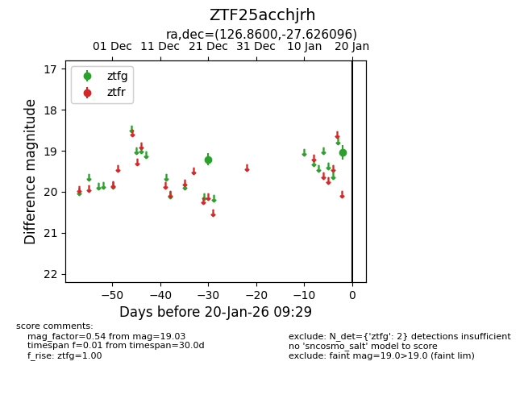
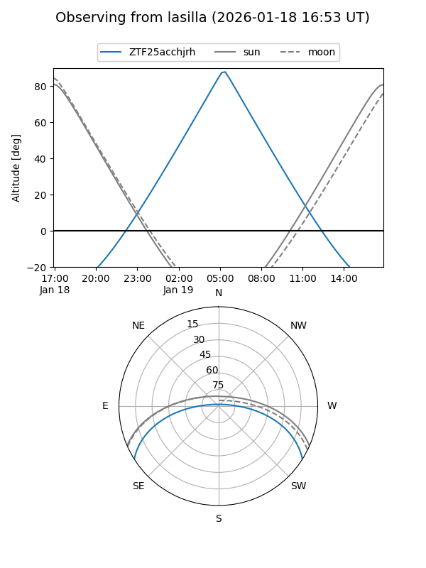
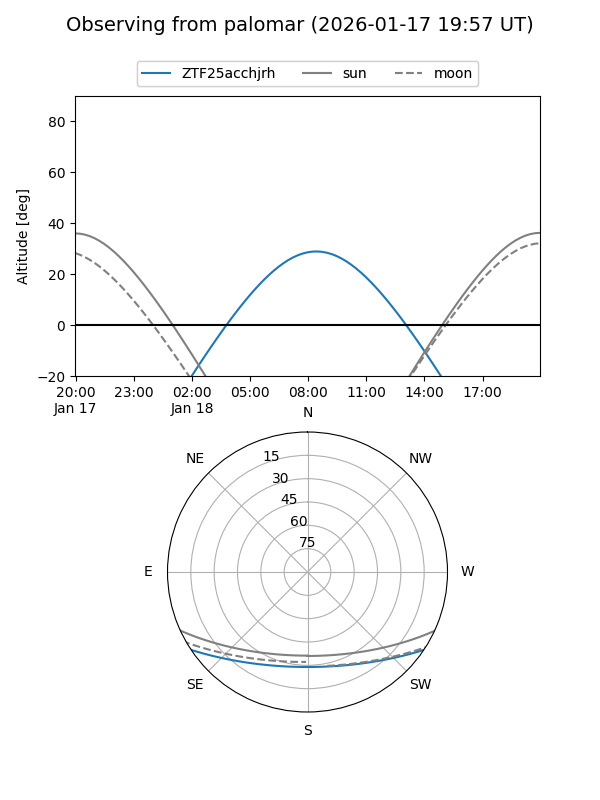

ZTF25acchjrh
Target ZTF25acchjrh at 2026-01-18 09:30
Aliases and brokers:
FINK: link
Lasair: link
ALeRCE: link
alt names
ZTF25acchjrh (ztf,fink_ztf)
Coordinates:
equatorial (ra, dec) = 126.8600,-27.62610
equatorial (HMS+DMS) = 08:27:26.41,-27:37:33.95
galactic (l, b) = (248.4168,+6.27430)
Flags:
Photometry:
last ztfg=19.03
2 ztfg detections
Lightcurve

Visibility


Additional plots